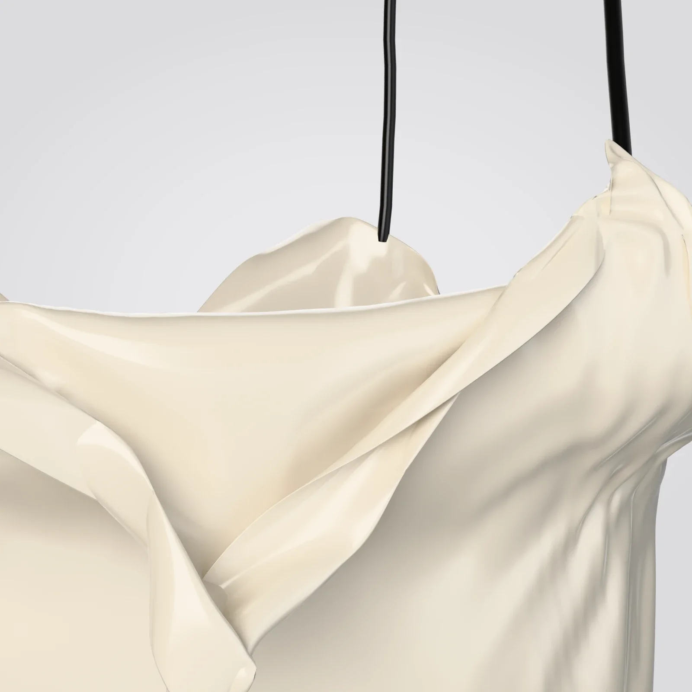

STAND-IN · img/alvor/front/master.* (departments/apparel/new-pieces-2026-11/build/silk-slip/site/silk_slip_front_16k.png; 16K, 8640 × 15360)
STAND-IN · img/alvor/front/master.* (departments/apparel/new-pieces-2026-11/build/silk-slip/site/silk_slip_front_16k.png; 16K, 8640 × 15360)Where it is going
The suite, at midnight
The lamp left on, the bed turned down on one side.
Chapter I · Outerwear
Alvor
Silk slip
Scroll to walk around it
Chapter I
Alvor
Silk slip
Cream silk satin cut on the bias, falling to mid-calf on two thin black straps.
- SILK
- CREAM SATIN, BIAS CUT
- STRAPS
- BLACK SILK
- LENGTH
- MID-CALF
- SIZE
- XS · S · M · L · XL
PRICE ON REQUEST
Keep a seatThe register sees the pre-sale first.
Details
- Pre-sale
- Made to order. We email your delivery date once production is confirmed. Cancel for a full refund any time before production starts.
- Returns
- Exchanges within 14 days of delivery, unused and with tags.
- Care
- Dry clean. Steam on low from the inside; no direct iron on the satin. Keep out of strong light. Care
- Size
- The measurements
 STAND-IN · img/alvor/world/master.* (C11: the last frame, the world plate (the suite, at midnight); 8K, 5760 × 7680)
STAND-IN · img/alvor/world/master.* (C11: the last frame, the world plate (the suite, at midnight); 8K, 5760 × 7680)Where it is going · C11
The suite, at midnight
The lamp left on, the bed turned down on one side.
On the screen in the film, the picture is tomorrow: each piece in the place it is going, with one place kept for someone.
The filmClose

STAND-IN · img/alvor/detail-sheen/master.* (the sheen, 8K close-up; 8K, 7680 × 4320)The sheen
A strap
The maker’s notes
Alvor, the silk slip
- It begins as cream silk satin, cut on the bias.
- At the front, 16 cm is let out between the straps to fall as a cowl.
- The straps are black silk, 4 mm, set 8.8 cm either side of the centre.
- The back scoops low, below the shoulder blades, and the top edge is bound.
- It ends at mid-calf.
On it: no text and no logo.
Read the bookThe packaging
The house lights go down. Black board, cream tissue the colour of the screen, and one gold disc between you and the first scene.
 STAND-IN · img/shared/pack-closed/master.* (packaging/chapter1/renders: closed (the approved final, 3840 px); 8K, 7680 × 4320)
STAND-IN · img/shared/pack-closed/master.* (packaging/chapter1/renders: closed (the approved final, 3840 px); 8K, 7680 × 4320)The closed box, its band and the gold disc
 STAND-IN · img/shared/pack-open/master.* (packaging/chapter1/renders: open (the approved final, 3840 px); 8K, 7680 × 4320)
STAND-IN · img/shared/pack-open/master.* (packaging/chapter1/renders: open (the approved final, 3840 px); 8K, 7680 × 4320)The open box, the piece folded in cream tissue
 STAND-IN · img/shared/pack-disc/master.* (packaging/chapter1/renders: disc (the approved final, 3840 px); 8K, 7680 × 4320)
STAND-IN · img/shared/pack-disc/master.* (packaging/chapter1/renders: disc (the approved final, 3840 px); 8K, 7680 × 4320)The gold disc on the band
 STAND-IN · img/shared/pack-shopping/master.* (packaging/chapter1/renders: shopping (the approved final, 3840 px); 8K, 7680 × 4320)
STAND-IN · img/shared/pack-shopping/master.* (packaging/chapter1/renders: shopping (the approved final, 3840 px); 8K, 7680 × 4320)The shopping bag with cream tissue
 STAND-IN · img/shared/pack-trims/master.* (packaging/chapter1/renders: trims (the approved final, 3840 px); 8K, 7680 × 4320)
STAND-IN · img/shared/pack-trims/master.* (packaging/chapter1/renders: trims (the approved final, 3840 px); 8K, 7680 × 4320)The hang tag, the card and the sealed envelope